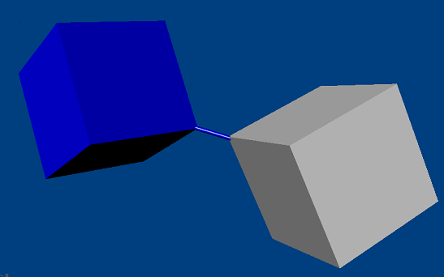

pJointDistance Class Reference
[Joints]
A distance joint maintains a certain distance between two points on two bodies.
More...
Inherits pJoint.
List of all members.
Public Member Functions
- void setMinDistance (float distance)
- Sets the minimum rest length of the rope or rod between the two anchor points.
- void setMaxDistance (float distance)
- Sets the maximum rest length of the rope or rod between the two anchor points.
- void setLocalAnchor0 (VxVector anchor)
- Sets the attachment point of the joint in bodies[0] space.
- void setLocalAnchor1 (VxVector anchor)
- Sets the attachment point of the joint in bodies[1] space.
- VxVector getLocalAnchor0 ()
- Retrieves the attachment point of the joint in bodies[1] space.
- VxVector getLocalAnchor1 ()
- Retrieves the attachment point of the joint in bodies[1] space.
- float getMinDistance ()
- Retrieves the minimum rest length of the rope or rod between the two anchor points.
- float getMaxDistance ()
- Retrieves the maximum rest length of the rope or rod between the two anchor points.
- pSpring getSpring ()
- Retrieves the spring which keeps both bodies springy.
- bool setSpring (pSpring spring)
- Makes the joint springy.
- void enableCollision (int collision)
- Enables collision between the two bodies.
Detailed Description
A distance joint maintains a certain distance between two points on two bodies.

- See also:
- pFactory::createDistanceJoint()
Member Function Documentation
| void pJointDistance::setMinDistance |
( |
float |
distance |
) |
|
Sets the minimum rest length of the rope or rod between the two anchor points.
- Parameters:
-
| [in] | distance | The new rest length. The value must be non-zero! |
- See also:
- getMinDistance()
| void pJointDistance::setMaxDistance |
( |
float |
distance |
) |
|
Sets the maximum rest length of the rope or rod between the two anchor points.
- Parameters:
-
| [in] | distance | The new rest length.The value must be non-zero! |
- See also:
- getMaxDistance()
| void pJointDistance::setLocalAnchor0 |
( |
VxVector |
anchor |
) |
|
Sets the attachment point of the joint in bodies[0] space.
- Parameters:
-
| [in] | anchor | The new anchor. |
- See also:
- getLocalAnchor0()
Reimplemented from pJoint.
| void pJointDistance::setLocalAnchor1 |
( |
VxVector |
anchor |
) |
|
Sets the attachment point of the joint in bodies[1] space.
- Parameters:
-
| [in] | anchor | The new anchor. |
- See also:
- getLocalAnchor1()
Reimplemented from pJoint.
| VxVector pJointDistance::getLocalAnchor0 |
( |
|
) |
|
Retrieves the attachment point of the joint in bodies[1] space.
- Returns:
- anchor The local anchor 0 .
- See also:
- setLocalAnchor0()
| VxVector pJointDistance::getLocalAnchor1 |
( |
|
) |
|
Retrieves the attachment point of the joint in bodies[1] space.
- Returns:
- The local anchor 1.
- See also:
- setLocalAnchor1()
| float pJointDistance::getMinDistance |
( |
|
) |
|
Retrieves the minimum rest length of the rope or rod between the two anchor points.
- Returns:
- The minimum distance amongst both bodies.
- See also:
- setMinDist()
| float pJointDistance::getMaxDistance |
( |
|
) |
|
Retrieves the maximum rest length of the rope or rod between the two anchor points.
- Returns:
- The maximum distance amongst both bodies.
- See also:
- setMaxDist()
| pSpring pJointDistance::getSpring |
( |
|
) |
|
Retrieves the spring which keeps both bodies springy.
- Returns:
- The spring.
- See also:
- setSpring()
| bool pJointDistance::setSpring |
( |
pSpring |
spring |
) |
|
Makes the joint springy.
- Parameters:
-
| [in] | spring | The new rest length. The spring.targetValue field is not used. |
- See also:
- getSpring()
| void pJointDistance::enableCollision |
( |
int |
collision |
) |
[virtual] |
Enables collision between the two bodies.
- Parameters:
-
Reimplemented from pJoint.